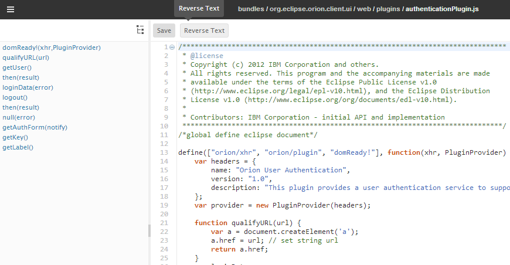

| Simple plugin example | ||
|---|---|---|
|
|
||
| Updating this document | ||
This section explains how to write a plugin for Orion. It is intended for developers who want to extend Orion's functionality.
For a full list of available services, see the Developer Guide.
Every plugin must minimally include the following JavaScript library: plugin.js
You can copy-paste its contents into a <script> tag in your plugin, or load it externally like so:
<script src="plugin.js"></script>
The plugin.js file is also an AMD module, so you can alternatively load it through a module loader like RequireJS.
require(['plugin'], function(PluginProvider) {
// ...
});
If you're authoring a plugin that will use
Object References, you must load an additional script, Deferred.js. Your script section would then look like this:
<script src="Deferred.js"></script> <script src="plugin.js"></script>
The plugin we construct in this tutorial does not use Object References, so just plugin.js will suffice.
Let's make a plugin that adds a button to the toolbar of the Orion editor. When clicked, it will reverse the selected text in the editor. This is not a very useful feature, but it'll be a good introduction to the concepts involved.
Create a new HTML file called reversePlugin.html with the following content:
<!DOCTYPE html> <html> <head> <meta charset="UTF-8" /> <title>Reverse Plugin</title> </head> <body></body> </html>
Now we have a bare-bones HTML file. The next step is to include the API we need to talk to Orion. Grab the plugin.js file (see What you need) and put it in the same folder as reversePlugin.html. Then add this inside the <head> tags of the HTML file:
<script src="plugin.js"></script>
Next, we'll add some code that connects our file to Orion. Add the following, again inside the <head> tags:
<script>
var headers = { name: "My Plugin", version: "1.0", description: "My first Orion plugin." };
var provider = new orion.PluginProvider(headers);
provider.connect();
</script>
At this point, we've got an honest-to-goodness Orion plugin, albeit one that does nothing. Let's go over the various parts in detail.
Now we're going to expose a service to Orion. We'll create and register a service with the orion.edit.command service type. Add the additional lines as shown:
var headers = { name: "My Plugin", version: "1.0", description: "My first Orion plugin." };
var provider = new orion.PluginProvider(headers);
var serviceImpl = { };
var serviceProperties = { };
provider.registerService("orion.edit.command", serviceImpl, serviceProperties);
provider.connect();
Let's review what was added:
We'll fill in the serviceImpl and serviceProperties objects with the actual details of the service. Change the serviceImpl object to look like this:
var serviceImpl = {
run: function(text) {
return text.split("").reverse().join("");
}
};
Note that the functions defined in the service will depend on what service type you're contributing to. In our case, we're contributing to "orion.edit.command", which expects a run() function. (See the Developer Guide for a list of extension points and their API.)
Change the serviceProperties object to look like this:
var serviceProperties = {
name: "Reverse Text",
key: ["e", true, true] // Ctrl+Shift+e
};
Make sure that your copy of reversePlugin.html looks like this:
<!DOCTYPE html>
<html>
<head>
<meta charset="UTF-8" />
<title>Reverse Plugin</title>
<script src="plugin.js"></script>
<script>
var headers = { name: "My Plugin", version: "1.0", description: "My first Orion plugin." };
var provider = new orion.PluginProvider(headers);
var serviceImpl = {
run: function(text) {
return text.split("").reverse().join("");
}
};
var serviceProperties = {
name: "Reverse Text",
key: ["e", true, true] // Ctrl+Shift+e
};
provider.registerService("orion.edit.command", serviceImpl, serviceProperties);
provider.connect();
</script>
</head>
<body></body>
</html>
First we need to host our plugin somewhere.
Now that you've got a URL for reversePlugin.html, install it into Orion:
Let's try it out.

Here are some existing plugins we've written. View their source code to see how they work:
Visit orion-plugins.googlecode.com for a directory of Orion plugins that you can install and view the source of.
|
|
||
| Updating this document |